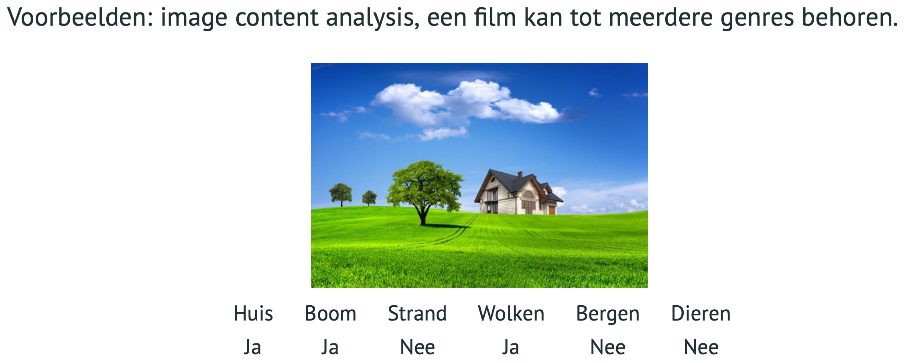

Classificatie
Classification
Q Classification
Wat is classificatie ?
Classificatie is een supervised learning techniek waarbij een getraind model niet geziene inputs toewijst aan één of meerdere gelabelde categorieën (classes)
Toepassingen
- Gezichtsherkenning
- Nummerplaatherkenning
- Spam detectie
- Medische diagnoses
- Voorspelling of een klant op een advertentie zal klikken
- Kwaliteitscontrole
- ...
Types van classifiers
Binairy (binomial) classifier
Verdeel de samples in twee verschillende klasses
Multiclass classifier
Verdeel de samples in drie of meerdere verschillende klasses Voorbeelden: gezichtsherkenning, sentiment analyse
Multilabel classifier
Er kunnen meerdere labels aan een sample toegewezen worden. Een sample kan tot meerdere klasses behoren

Classificatie
Bij classificatie is de output/target een (discrete) variabele/klasse
Waarom linaire regressie geen goede optie is
Een lineaire regressie is geen goede optie om te classificeren omdat het een zwart/wit opdeling is. Het is gevoelig voor uitschieters waardoor rechten platter/stijler gaan liggen wat impact heeft op de scoring van de lagere waarden.
Je kan zelfs negatieve waarden uitkomen.